Campaign
Find your edge.
Work through 100 stages, shifting targets and boss encounters. Earn medals and unlock the same stages in Practice.
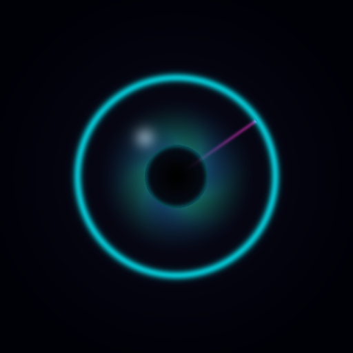
NEON EYEReflex GameNavigation is translated. The game guide and policies below are currently in English.
One-tap timing & reaction · iPhone & iPad · Ages 13+
Watch the needle. Read the arc. Tap when they meet.
A small moment of focus, with a little more at stake every time.
In development · App Store link coming after release
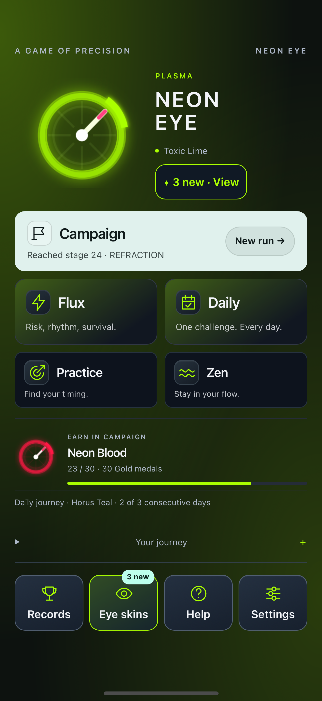
Pick your pace
You don't have to play every mode the same way.
Work through 100 stages, shifting targets and boss encounters. Earn medals and unlock the same stages in Practice.
Survive changing waves. Choose temporary help or take a risk for bonus points, and build a run worth returning to.
Take on a new challenge each day. Complete it to build your daily streak and work toward new eye skins.
Choose a stage reached in Campaign. Try a 12-tap drill with optional guides, slower speed and wider windows. The recap helps you improve; Campaign unlocks the next stage.
Play without a countdown or game over. Find a comfortable speed and build a chain of hits. A miss resets the chain; the session continues.
The eye collection
Four materials. Twenty-one eyes. Medals and Daily streaks unlock new looks. Preview any eye in the game, then equip it when you've earned it.
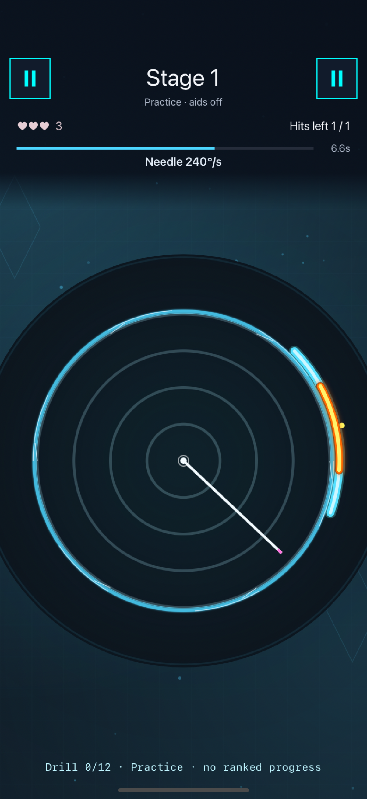
PLASMA
A soft, luminous halo, shown in Practice.
Available from the start.
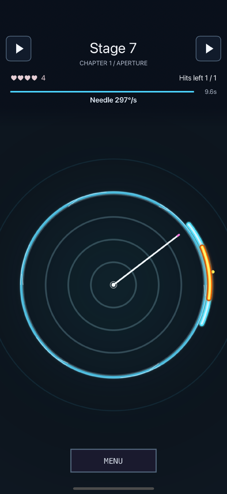
GLASS
A crisp double edge, shown in Campaign.
Earn 12 Silver-or-better Campaign medals.
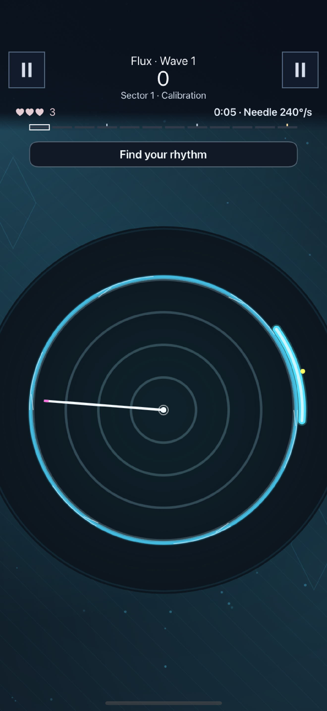
PLASMA
A bright green glow, shown in Flux.
One of the looks earned through play.
All style. Same timing. Skins change the ring, colors and atmosphere. They never make the target easier or increase your score.
Website mood: Classic Neon. This preview does not change your game.
Room to find your flow
Inside the game
Actual game screens on iPhone and iPad. Tap any image to see it at full size.
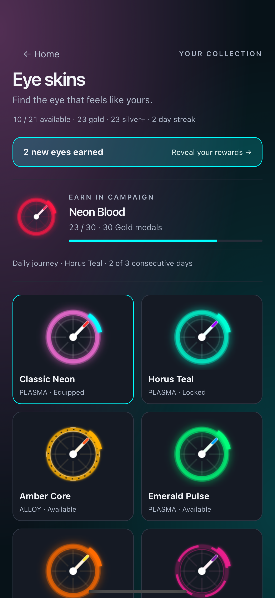
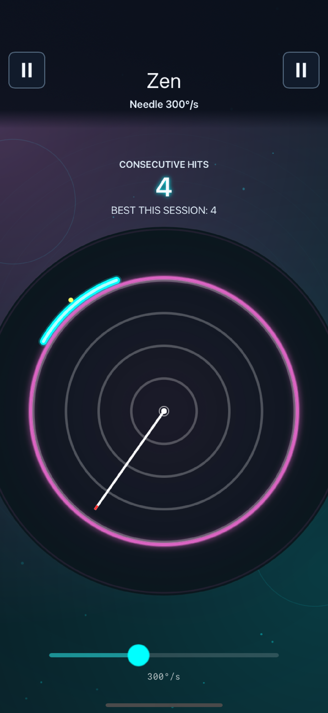
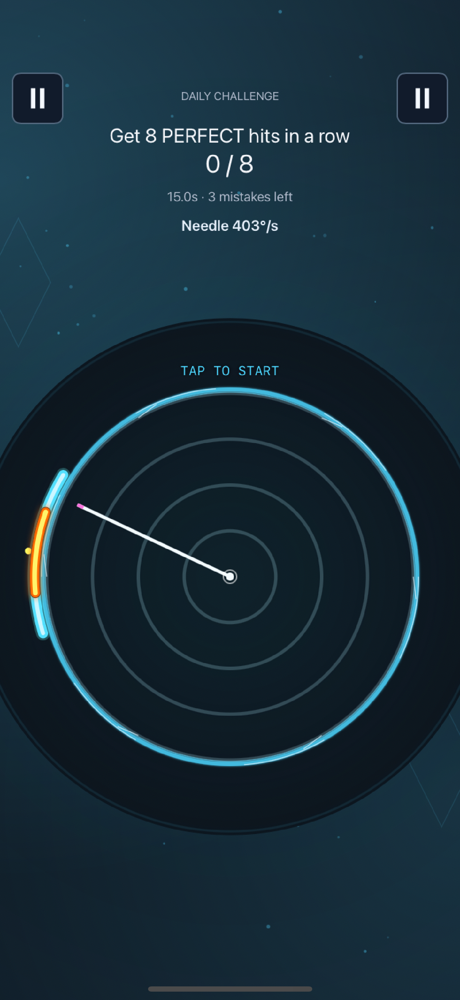
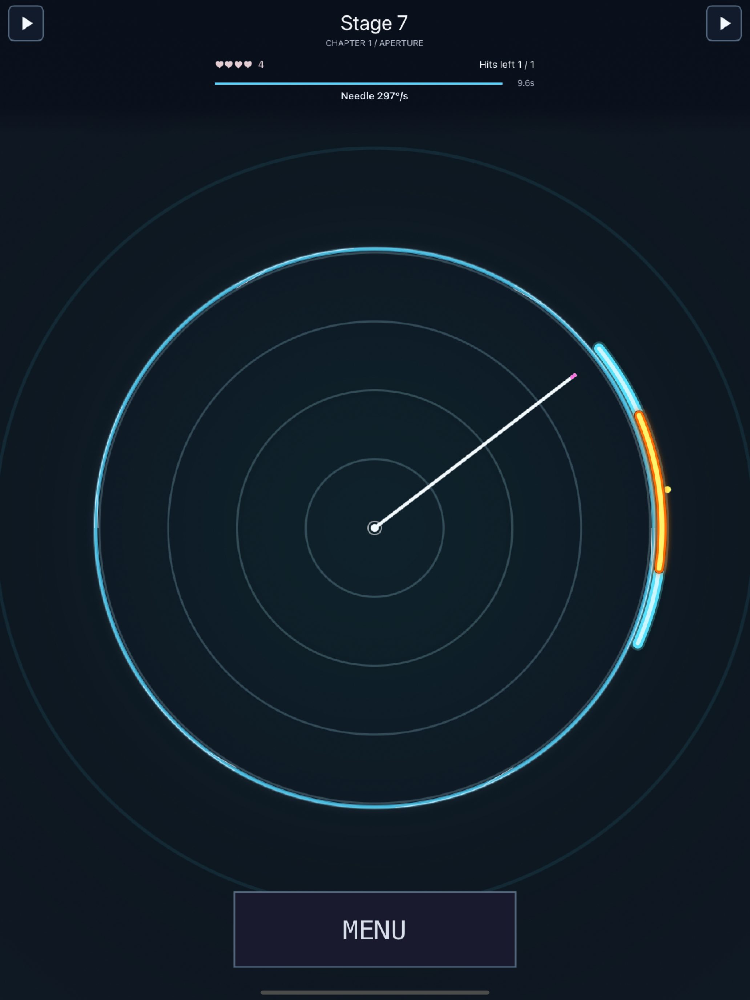
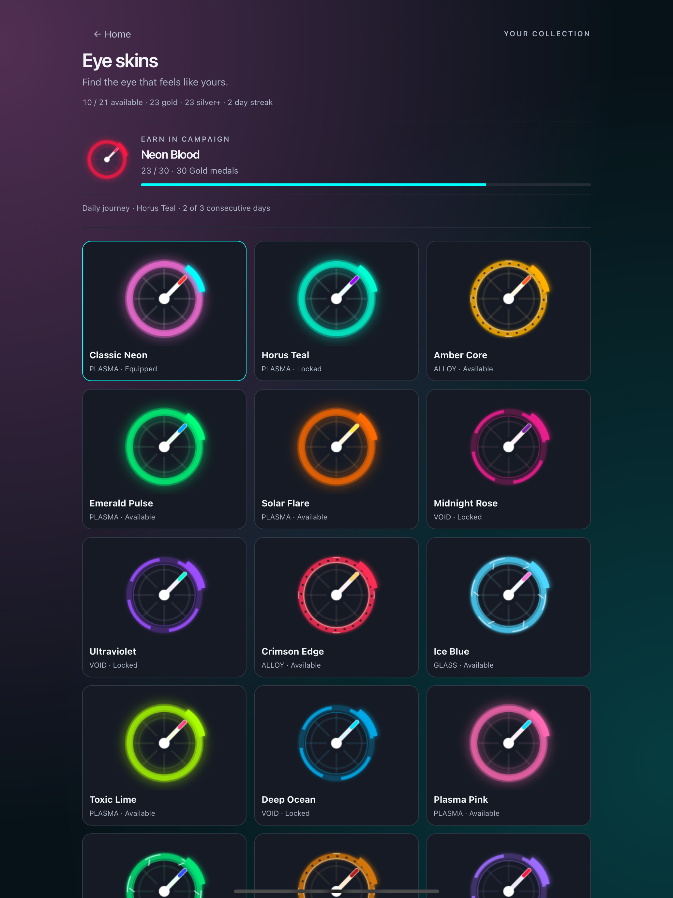
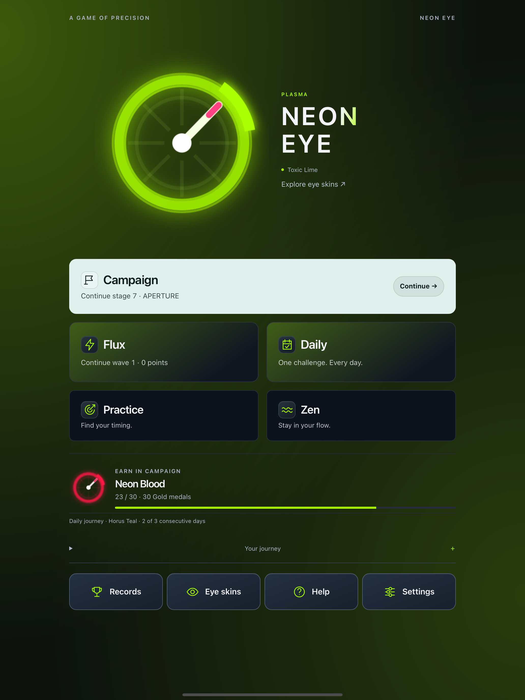
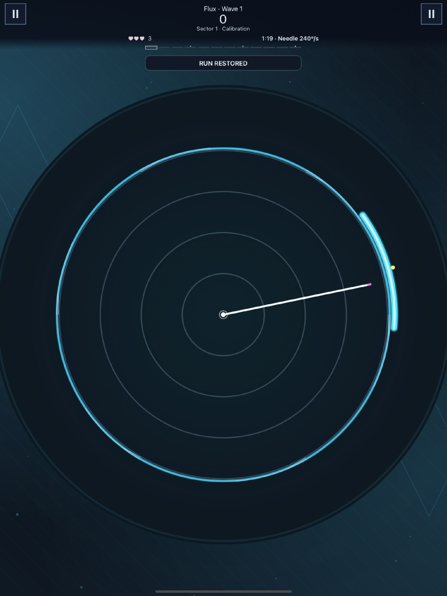
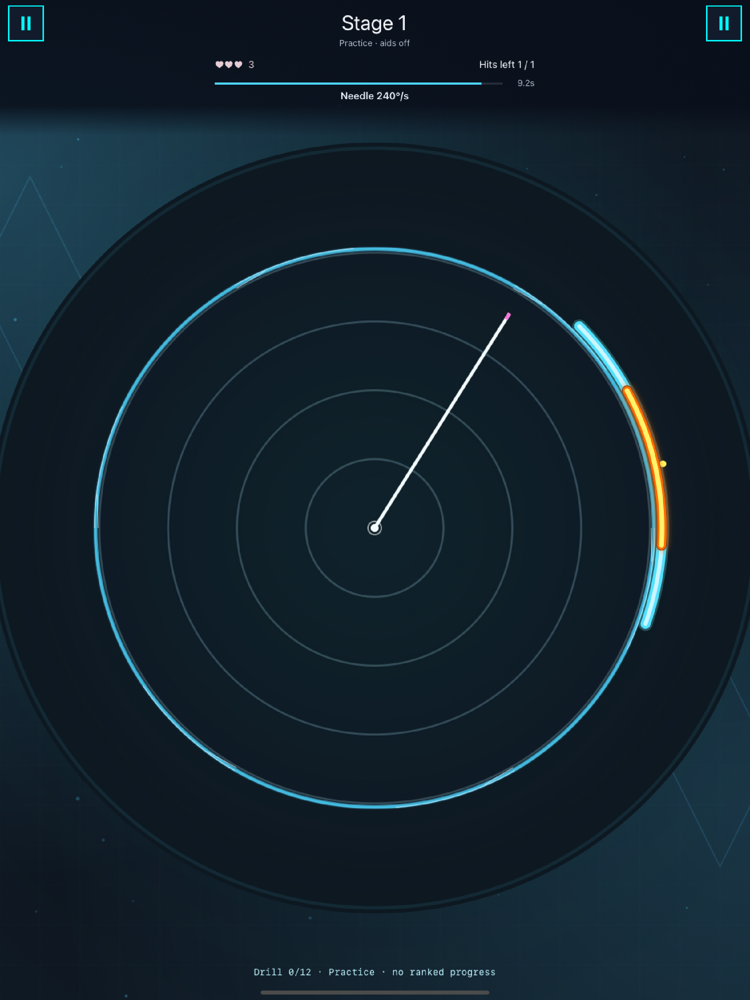
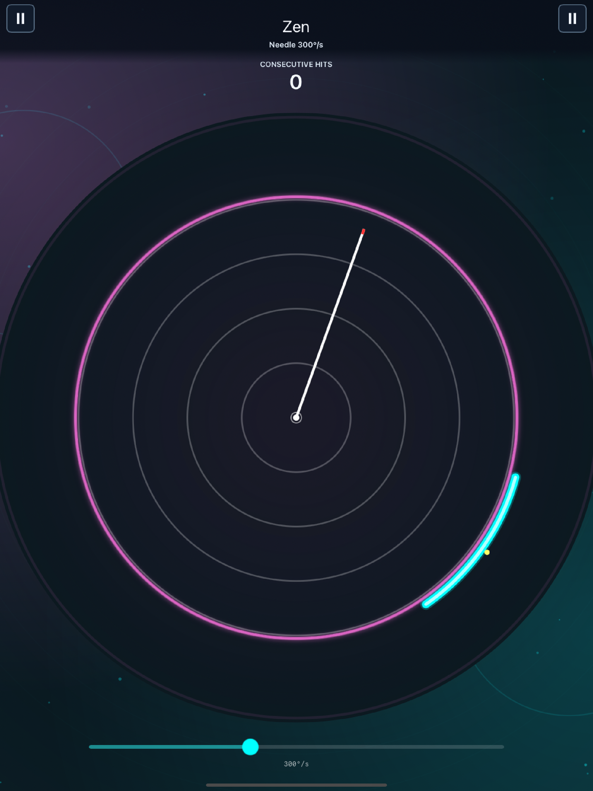
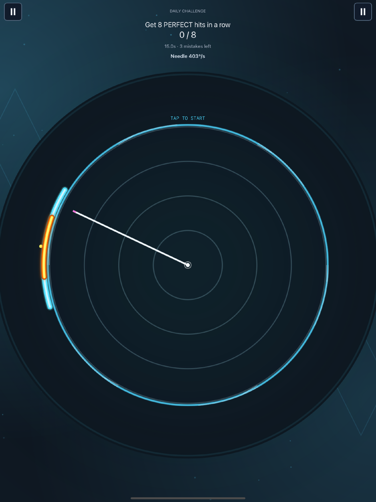
Before you play
Ads can appear at natural breaks. Remove Forced Ads is a one-time purchase that removes interstitial ads. Optional rewarded videos remain your choice, when available.
Price and availability are shown in the iOS app. No subscription is offered in this launch version.
Gameplay and Personal Records are saved on your device. There is no cloud-save service in this version. Core play works offline; ads, purchases, Restore and Game Center need online services.
Read the privacy policy ↗Stage unlocking, sound, saved runs or a missing purchase? Start with the short answers in Support.
Get help